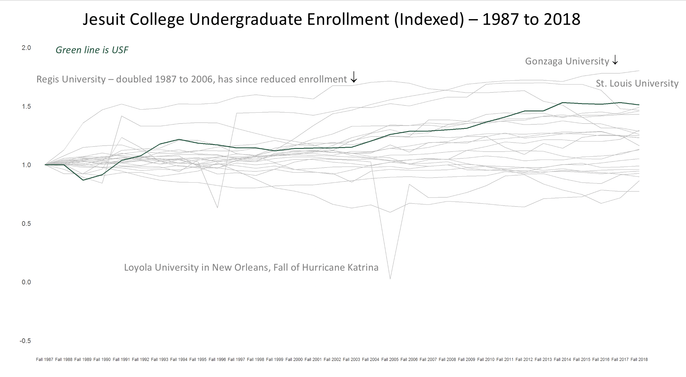

What are the major trends affecting the higher education landscape in the US today, particularly traditional liberal arts colleges?
- Changing demographics impacting enrollments
- Affordability
- What social/political threats are on the horizon that colleges should start addressing?
The talk was divided into four segments:
- The high school graduation picture in California (USF gets most of its students from CA)
- Historical enrollment at USF, and compared to other Jesuit colleges
- College Costs and Affordability
- What social/political threats are on the horizon that colleges should start addressing?
The data, code and resulting presentation are in this github repo. What I plan to do in this post is in effect annotate some of the code to explain how I put everything together. And of course to show some charts & tables.
First up is pulling in a few decades of high school graduation and enrollment data and wrangling it all to show historical enrollment and projections through 2029. The full code for that is at the github repo in the file 01_hs enrollment data.R. So what did I do?
First, loaded some packages:
# readin in data, create df for plots
library(tidyverse) # to do tidyverse things
library(tidylog) # to get a log of what's happening to the data
library(patchwork) # to stitch together plots
library(ggtext) # helper functions for ggplot text
library(ggrepel) # helper functions for ggplot
library(rCAEDDATA) # aggregated CA HS data
library(readr) # read in flat files
library(janitor) # data munging/cleaning utilities
#library(formatR) # help with tidying the code chunksThe rCAEDDATA package was put together by my former SFSU IR colleague David Ranzolin. Though the last update was October 2017, it still contains a trove of data, including public HS graduation numbers from 1993 to 2016. That said, I didn’t actually use the package functions, just downloaded the data included with the package. For later years I manually downloaded files from the CA Department of Education’s data pages: 2017 here, and the later years here. The 2017 file has the same structure as the files in David’s package. Later years need a bit of restructuring:
cahsgrad18 <- read.delim("data/cahsgrad18.txt", stringsAsFactors=FALSE) %>%
clean_names() %>%
filter(reporting_category == "TA") %>%
filter(aggregate_level == "S") %>%
filter(dass == "All") %>%
filter(charter_school == "All") %>%
mutate(YEAR = "2018") %>%
mutate(YEAR = factor(YEAR)) %>%
mutate_at(vars(ends_with("_code")), as.character) %>%
mutate(county_code = ifelse(nchar(county_code) == 1,
str_pad(county_code, 2, "left", "0"), county_code)) %>%
mutate(CDS_CODE = paste(county_code, district_code, school_code, sep = "")) %>%
mutate(GRADS = as.integer(ifelse(regular_hs_diploma_graduates_count == "*",
0, regular_hs_diploma_graduates_count))) %>%
mutate(UC_GRADS = as.integer(ifelse(met_uc_csu_grad_req_s_count == "*",
0, met_uc_csu_grad_req_s_count))) %>%
select(CDS_CODE, GRADS, UC_GRADS, YEAR) %>%
group_by(YEAR) %>%
summarise(total_grads = sum(GRADS),
uccsu = sum(UC_GRADS),
notuccsu = total_grads - uccsu)
Next, some projected HS graduation data from the CA Department of Finance. I did a quick transposing of the “HS Grads Table” tab in excel and used that to read into r. You can see the file I used at the github repo’s data folder.
grproj_to2028 <- readxl::read_excel("data/capublic_k12_enrollproj_to2028.xlsx",
sheet = "hsgrads-tr") %>%
filter(year != "2017-18") %>%
mutate(yearend = str_sub(year, 6, 7)) %>%
mutate(YEAR = paste("20", yearend, sep = "")) %>%
#mutate(YEAR = factor(year_ch)) %>%
mutate(uccsu = as.integer(NA)) %>%
mutate(notuccsu = as.integer(NA)) %>%
mutate(notuccsu = as.integer(NA)) %>%
mutate(type = "Projected") %>%
select(YEAR, total_grads = total, uccsu, notuccsu, type) %>%
# amend 2018-19 with actual results from
# https://dq.cde.ca.gov/dataquest/dqcensus/CohRateLevels.aspx?cds=00&agglevel=state&year=2018-19
mutate(total_grads = ifelse(YEAR == "2019", 417496, total_grads)) %>%
mutate(uccsu = ifelse(YEAR == "2019", 210980, uccsu)) %>%
mutate(notuccsu = ifelse(YEAR == "2019", total_grads - uccsu, notuccsu)) %>%
mutate(type = ifelse(YEAR == "2019", "Actual", type))The projected HS grad stats didn’t have values for UC/CSU grads, so I needed to impute that as part of the merging of the actual & projected files. I also calculated year-over-year percent changes for a few fields. (though did it manually not with a function like in the Tidy Tuesday HBCU post). The code below gets us the cahsgrads_1993_2028 dataframe.
cahsgrads_1993_2028 <- rbind(cahsgrad93to18_tot, grproj_to2028) %>%
mutate(pctucgrads = uccsu / total_grads) %>%
arrange(YEAR) %>%
# add projected uccsu grads based on constant 2017-18 to 2018-19 increase 0.0061437
mutate(pctucgrads = ifelse(YEAR >= "2020", lag(pctucgrads) + 0.0061437, pctucgrads)) %>%
mutate(pctucgrads = ifelse(YEAR == "2021", lag(pctucgrads) + 0.0061437, pctucgrads)) %>%
mutate(pctucgrads = ifelse(YEAR == "2022", lag(pctucgrads) + 0.0061437, pctucgrads)) %>%
mutate(pctucgrads = ifelse(YEAR == "2023", lag(pctucgrads) + 0.0061437, pctucgrads)) %>%
mutate(pctucgrads = ifelse(YEAR == "2024", lag(pctucgrads) + 0.0061437, pctucgrads)) %>%
mutate(pctucgrads = ifelse(YEAR == "2025", lag(pctucgrads) + 0.0061437, pctucgrads)) %>%
mutate(pctucgrads = ifelse(YEAR == "2026", lag(pctucgrads) + 0.0061437, pctucgrads)) %>%
mutate(pctucgrads = ifelse(YEAR == "2027", lag(pctucgrads) + 0.0061437, pctucgrads)) %>%
mutate(pctucgrads = ifelse(YEAR == "2028", lag(pctucgrads) + 0.0061437, pctucgrads)) %>%
mutate(pctucgrads = ifelse(YEAR == "2029", lag(pctucgrads) + 0.0061437, pctucgrads)) %>%
mutate(uccsu = ifelse(type == "Projected", round(pctucgrads * total_grads, 0), uccsu)) %>%
mutate(notuccsu = ifelse(type == "Projected", round(total_grads -uccsu, 0), notuccsu)) %>%
mutate(gr_tot_change = (total_grads - lag(total_grads))) %>%
mutate(gr_tot_pct_change = (total_grads/lag(total_grads)- 1)) %>%
mutate(gr_uc_change = (uccsu - lag(uccsu))) %>%
mutate(gr_uc_pct_change = (uccsu/lag(uccsu) - 1)) %>%
mutate(gr_notuc_change = (notuccsu - lag(notuccsu))) %>%
mutate(gr_notuc_pct_change = (notuccsu/lag(notuccsu) - 1)) %>%
select(YEAR, total_grads, uccsu, notuccsu, type, pctucgrads, type, everything())
cahsgrads_1993_2028 <- cahsgrads_1993_2028 %>%
mutate(pctucgrads = ifelse(year_ch >= "9293", uccsu / total_grads, pctucgrads))
Now that we have the data, let’s make the chart I presented to the group, showing actual & projected high school grads in California, breaking out the UC/CSU eligible grads. It’s fairly straightforward ggplot code, so no need to display here.
What does the chart tell us? Well…
- 67% increase in grads from 1993 to 2018
- UC/CSU eligibility 33% in 1993, 50% in 2018
- Grads expected to peak in 2023, then decline slightly
But these assumptions were all pre-COVID - I gave the talks in early February of 2020. Given factors such as migration patterns within the state, people moving out of CA, parents moving their kids to private schools, etc., the actual graduation picture is sure to change.

Next I presented some data on USF enrollment and compared USF to their Jesuit college peers. For that I used two sources: data from the Delta Cost Project (DCP), and since DCP stops at 2015, downloaded some files directly from IPEDS and read in the CSVs. I could also have used r tools like the Urban Insitute’s educationdata package an API wrapper to that scrapes NCES and other websites for data. (I also referenced that package in my HBCU post).
The import code isn’t all that challenging - read in the CSV, select the fields I needed, do a bit of basic cleaning. So no need to show it. You can see it in the github repo - go to the file ’02_ipeds_enroll.R`. Though if anything’s worth highlighting it’s the need to create an object of IPEDS unitids for Jesuit colleges so I could group them during analysis. The Jesuit colleges include names you know: Georgetown, Gonazaga, Boston College, the Loyolas (Chicago, LA, New Orleans, Baltimore), etc…
jesids <- c("164924", "181002", "186432", "122931", "169716", "159656", "127918", "192323",
"163046", "122612", "236595", "239105", "203368", "179159", "215770",
"215929", "131496", "166124", "102234", "117946", "206622", "102234",
"166124", "117946", "206622", "235316", "129242")First up is USF enrollment from Fall 1987 to Fall 2018 (the latest year that IPEDS had available as of February 2020). The ggplot code is mostly basic, so no need to show all of it here. What I will show is a neat solution to a crowded x axis - the every_nth function to count every n value, and apply it to the breaks - in this case I set it to n=3. I’d tried scales::pretty_breaks() but it didn’t work. I also used ggrepel to move the labels a bit.
Not shown here, but I used patchwork to stitch together the undergrad and grad enrollment plots.
every_nth = function(n) {
return(function(x) {x[c(TRUE, rep(FALSE, n - 1))]})
}
plot_usfenr_ug <-
ipeds_fallenroll_8718 %>%
filter(UNITID == "122612", level == "Undergraduate") %>%
select(year, level, tot_enr) %>%
ggplot(aes(year, tot_enr)) +
geom_bar(stat = "identity", fill = "#00543C") +
# geom_text(aes(label = scales::comma(round(tot_enr), accuracy = 1)),
# color = "#919194", vjust = -.75, size = 3) +
geom_text_repel(data = ipeds_fallenroll_8718 %>%
filter(UNITID == "122612", level == "Undergraduate",
year %in% c("Fall 1987", "Fall 1990", "Fall 1990",
"Fall 1993", "Fall 1996", "Fall 1999",
"Fall 2002", "Fall 2005", "Fall 2008", "Fall 2011",
"Fall 2014", "Fall 2017", "Fall 2018")),
aes(label = scales::comma(round(tot_enr),
accuracy = 1)), nudge_y = 400,
min.segment.length = 0,
size = 3, color = "#919194") +
scale_x_discrete(breaks = every_nth(n = 3)) +
scale_y_continuous(label = scales::comma, limits = c(0, 7000),
breaks = c(0, 1750, 3500, 5250, 7000)) +
labs(x = "", y = "") +
theme_minimal() +
theme(panel.grid.major = element_blank(), panel.grid.minor = element_blank(),
axis.text.y = element_text(size = 10))What’s the enrollment picture at USF? Well, this chart tells us that:
- Undergraduate enrollment have increased by 60% since 1987.
- Graduate enrollments hovering around 3,500 for a number of years, and up to +/- 4,000 since 2016.
- Ratio of undergraduate::graduate enrollments steady over time, generally +/- 2% points from 60%.
How does this relate to the high school graduation trends in CA & nearby states?
- With 63% of new students coming from California, high school enrollments here will have most impact.
- Western Interstate Commission for Higher Education (WICHE) projects HS grads from all western states to peak in 2024 at 862,000, then decline for a few years, rebounding again around 2032. (Knocking at the College Door, https://knocking.wiche.edu)
- During 1980s the Gen X population drop mitigated by increased college-going rates – what will happen this time?

Quick note about this plot…I was getting an annoying Error in grid.Call(C_textBounds, as.graphicsAnnot(x\(label), x\)x, x$y, : polygon edge not found message trying to run these plots. For the presentation I was using the Calibri font, with this call in the theme() section: text = element_text(family = "Calibri"). I removed that & the error went away. But this after trying everything from reinstalling Quartz, shutting down all browser windows, running `dev.off()’ in the console…got rid of the special font & no error.
Anyway…back to the charts.
I wanted to show USF undergraduate enrollment indexed over time relative to their Jesuit college peers. The final version of the chart is below, complete with annotations I added in power point. There are ways to do similar annotations on r; I used power point because I could do it quicker, with less fuzting around with annotation placement after rendering and saving the image.
We see that USF is in the upper quarter of total enrollment growth. Gonzaga & St. Louis University, two schools well-known thanks to success in the NCAA men’s basketball tournament, showed significant growth in the period. Here you might say “but wait, Georgetown has had NCAA success”, and I’d reply "yes, but their success started before 1987, so within this period didn’t grow as much as Gonzaga & St. Louis.

Jesuit College Enrollment
So how did I make this chart? How did we get the green line for USF, with all else in gray? Well…
First I created a dataframe of just the Jesuit colleges, and indexed changes in enrollment to 1.
enrollindex_jes <-
ipeds_fallenroll_8718 %>%
filter(jescoll == 1, level == "Undergraduate") %>%
mutate(enr_pct_change2 = enr_pct_change / 100) %>%
mutate(enr_pct_change2 = ifelse(year == "Fall 1987", 1, enr_pct_change2)) %>%
arrange(UNITID, year) %>%
group_by(UNITID) %>%
mutate(index_enr_inst = 1) %>%
mutate(index_enr_inst = ifelse(year >= "Fall 1988", cumsum(enr_pct_change2),
index_enr_inst)) %>%
ungroup() %>%
## fix loyola NO b/c of enroll drop after katrina
mutate(index_enr_inst = ifelse((UNITID == "159656" & year == "Fall 2006"),
0.833399497, index_enr_inst)) %>%
mutate(index_enr_inst = ifelse((UNITID == "159656" & year >= "Fall 2007"),
lag(index_enr_inst) + enr_pct_change2, index_enr_inst)) %>%
mutate(index_enr_inst = ifelse((UNITID == "159656" & year >= "Fall 2008"),
lag(index_enr_inst) + enr_pct_change2, index_enr_inst)) %>%
mutate(index_enr_inst = ifelse((UNITID == "159656" & year >= "Fall 2009"),
lag(index_enr_inst) + enr_pct_change2, index_enr_inst)) %>%
mutate(index_enr_inst = ifelse((UNITID == "159656" & year >= "Fall 2010"),
lag(index_enr_inst) + enr_pct_change2, index_enr_inst)) %>%
mutate(index_enr_inst = ifelse((UNITID == "159656" & year >= "Fall 2011"),
lag(index_enr_inst) + enr_pct_change2, index_enr_inst)) %>%
mutate(index_enr_inst = ifelse((UNITID == "159656" & year >= "Fall 2012"),
lag(index_enr_inst) + enr_pct_change2, index_enr_inst)) %>%
mutate(index_enr_inst = ifelse((UNITID == "159656" & year >= "Fall 2013"),
lag(index_enr_inst) + enr_pct_change2, index_enr_inst)) %>%
mutate(index_enr_inst = ifelse((UNITID == "159656" & year >= "Fall 2014"),
lag(index_enr_inst) + enr_pct_change2, index_enr_inst)) %>%
mutate(index_enr_inst = ifelse((UNITID == "159656" & year >= "Fall 2015"),
lag(index_enr_inst) + enr_pct_change2, index_enr_inst)) %>%
mutate(index_enr_inst = ifelse((UNITID == "159656" & year >= "Fall 2016"),
lag(index_enr_inst) + enr_pct_change2, index_enr_inst)) %>%
mutate(index_enr_inst = ifelse((UNITID == "159656" & year >= "Fall 2017"),
lag(index_enr_inst) + enr_pct_change2, index_enr_inst)) %>%
mutate(index_enr_inst = ifelse((UNITID == "159656" & year >= "Fall 2018"),
lag(index_enr_inst) + enr_pct_change2, index_enr_inst)) %>%
select(UNITID, inst_name, year, tot_enr, enr_change, enr_pct_change,
enr_pct_change2, index_enr_inst)Why all the manual fixes to Loyola in New Orleans? Well, look at the chart again. See the dip in enrollment around 2005? What might have tanked enrollment at a New Orleans-based college in 2005? Oh right…Hurricane Katrina. To smooth out the drop, I reindexed from the 2006 enrollment point, and added to the index sum after that. For some reason I couldn’t identify, the usual lag from prior year wasn’t working so I just did it manually.
The plot…to get the green line, I first plotted everything but USF in grey, then plotted USF in green. Saved the plot, then added annotations in power point.
ggplot(enrollindex_jes, aes(year, index_enr_inst, group = UNITID)) +
geom_line(data = subset(enrollindex_jes, UNITID != "122612"), color = "grey") +
geom_line(data = subset(enrollindex_jes, UNITID == "122612"),
color = "#00543C", size = 1) +
scale_y_continuous(limits = c(-.5, 2),
breaks = c(-.5, 0, .5, 1, 1.5, 2)) +
labs(x = "", y = "") +
theme_minimal() +
theme(#text = element_text(family = "Calibri"),
panel.grid.major = element_blank(), panel.grid.minor = element_blank(),
axis.text.y = element_text(size = 14))I had planned to use the Delta Cost/IPEDS tuition & fees data for some charts in the section on affordability, but it worked out better to pull data from the College Board.
Again, you can access the presentation in the github repo. If you have questions or comments about the code or the content, you can find me on LinkedIn or Twitter by clicking on the icon links at the bottom of the post or on the main page. Or send me an email of you already know how to find me that way.